Un intérieur réussi ne se visite pas.
Il se ressent, comme une température.
La couleur n'est pas une décoration.
C'est une architecture.
Certaines portes
ne s'ouvrent pas.
Elles vous
reconnaissent.
( faites défiler )
Bienvenue
La Maison vous ouvre
ses portes.
La fondatrice
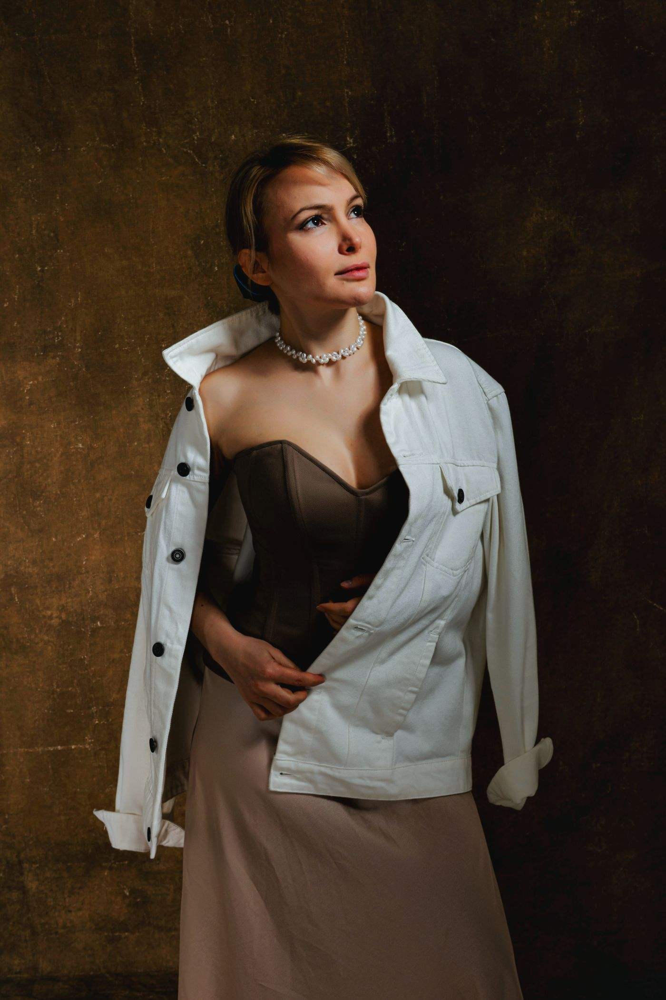
AlmaVivier
« Je ne choisis pas une couleur.
J'écoute celle que la pièce réclame. »
Formée à Milan, passée par les grandes maisons avant d'ouvrir le studio rue de Turenne, Alma Vivier traite le pigment comme un matériau de construction.
Depuis 2014, son équipe de neuf personnes compose des intérieurs qui se portent comme des vêtements : au plus près du corps, à la température exacte.
Franco-italienne, elle vit entre Paris et les carrières de Vérone, où elle choisit ses marbres à la lumière du matin.
Projets choisis — 2021 → aujourd'hui
La matière première
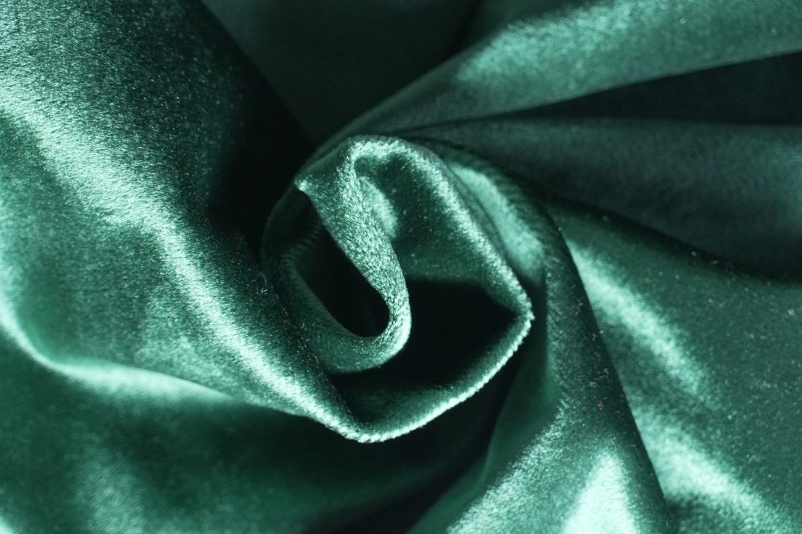
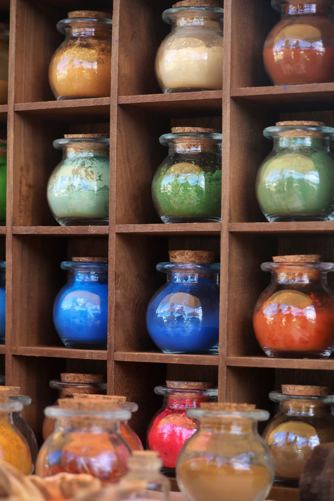
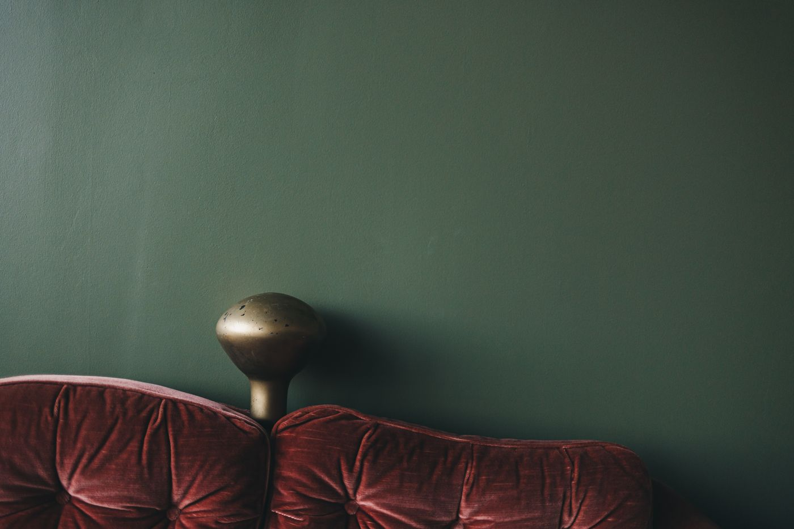
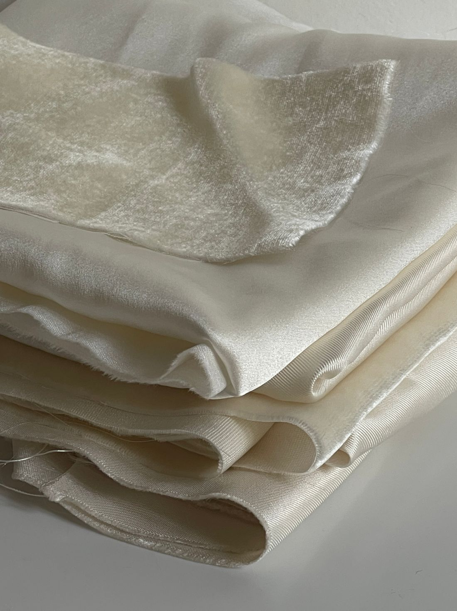
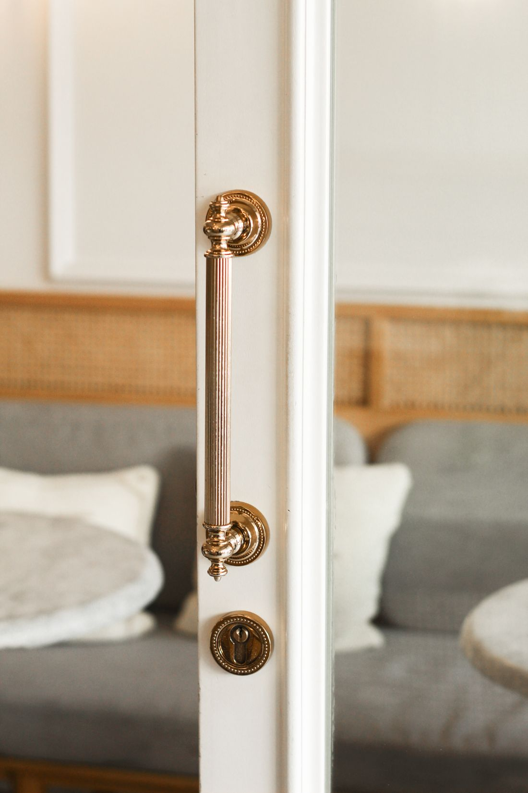
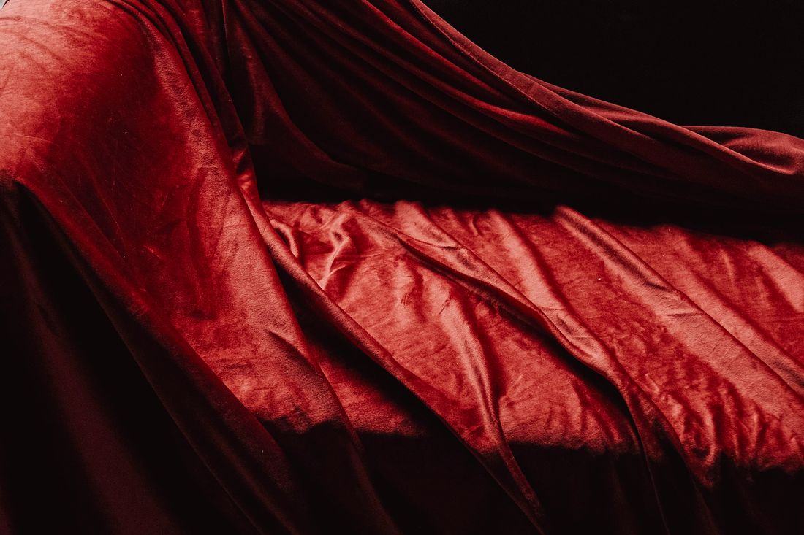
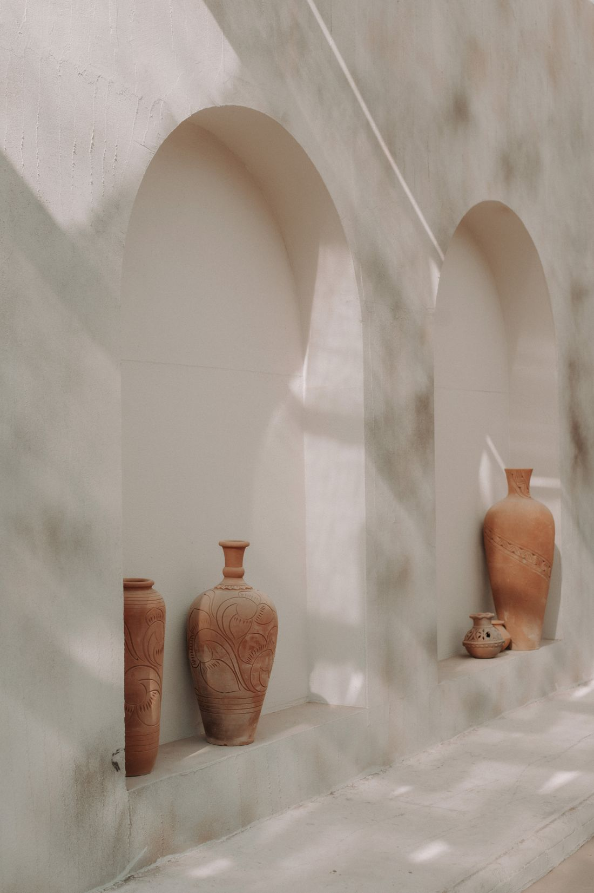
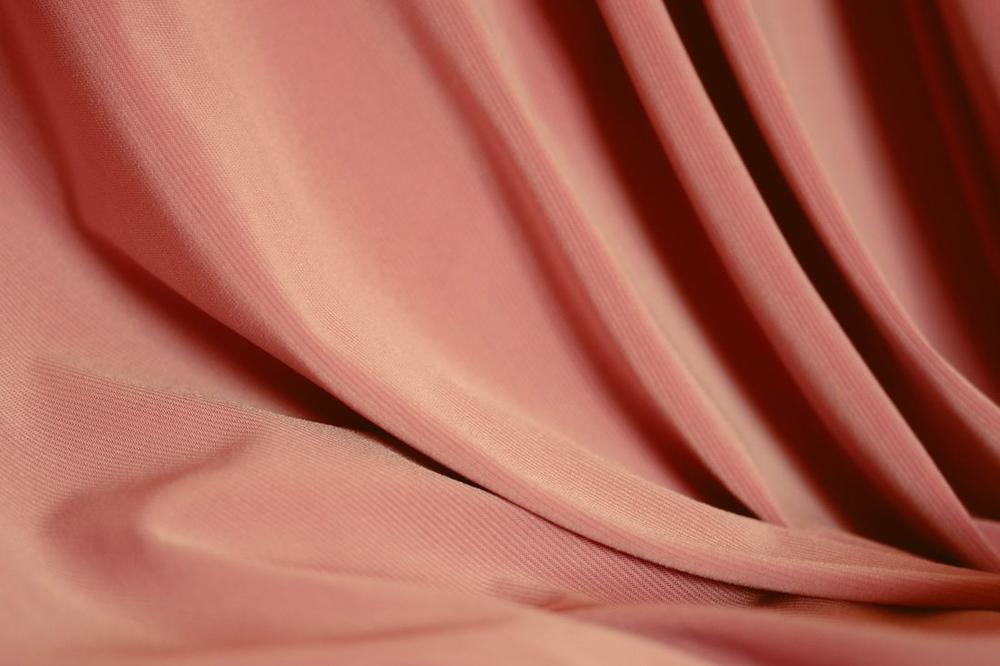
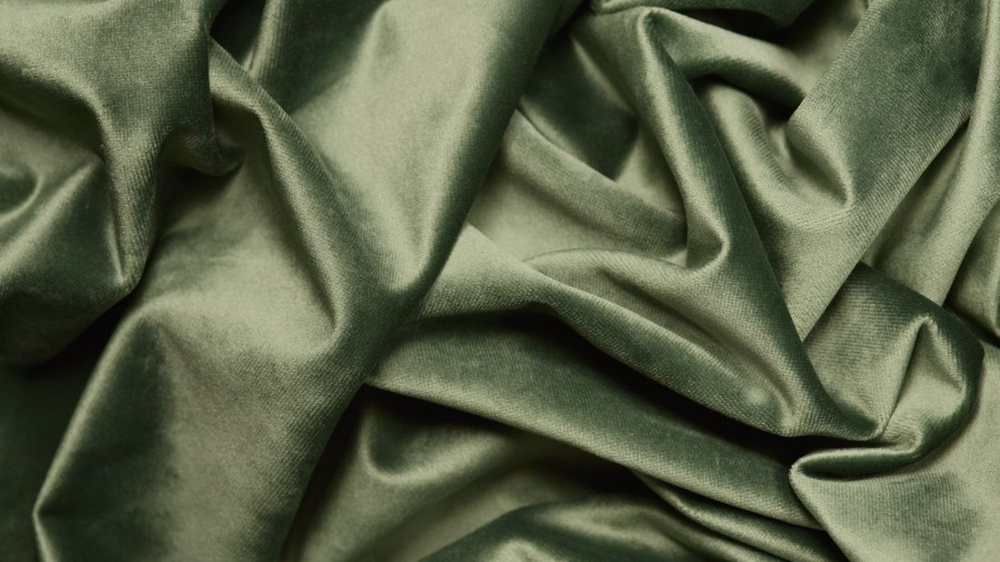
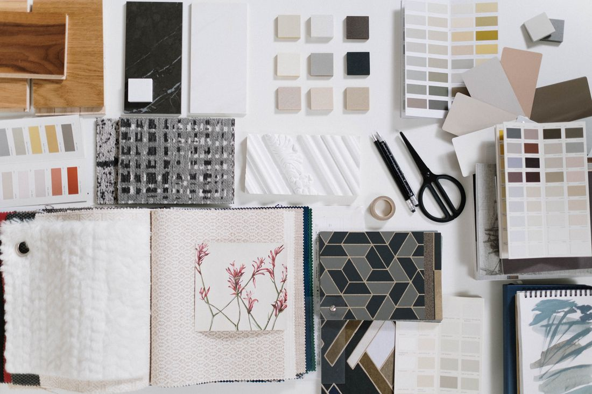
Le studio
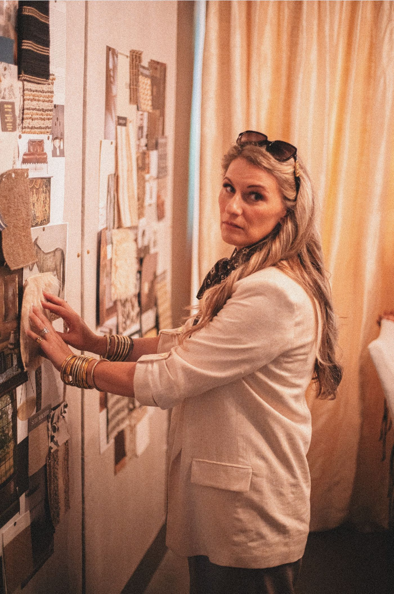
9, rue de Turenne
Paris IIIe
Neuf personnes, deux chats, quatre mille échantillons. Les projets naissent sur une grande table de noyer, entre les bocaux de pigments et la lumière du nord.
Le studio accompagne chaque chantier de la première esquisse au dernier coussin.
Intérieurs · Palette · La Revue du Décor · Maison Critique · L'Objet